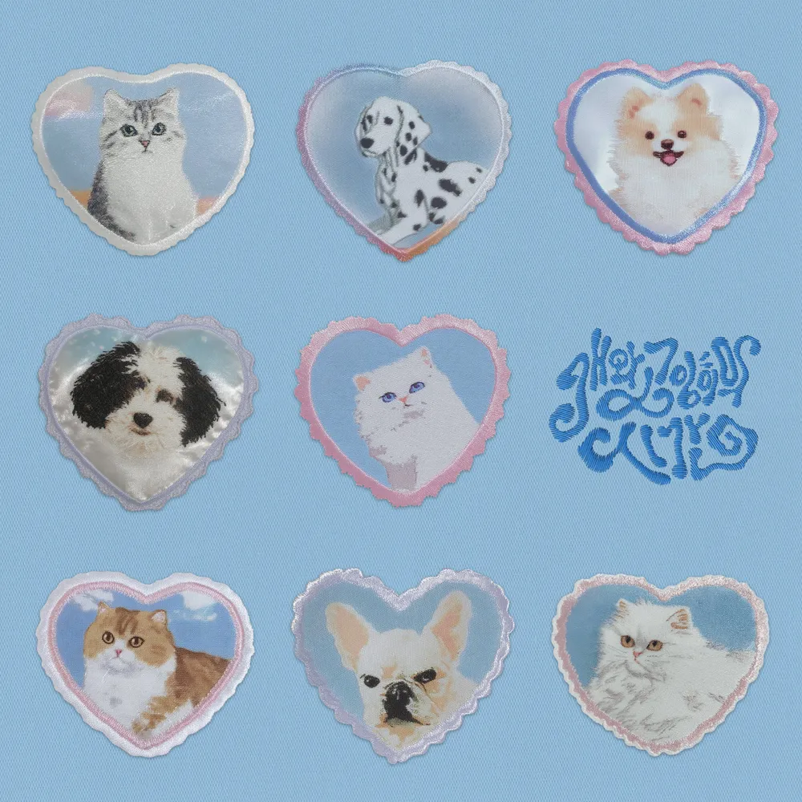

안녕하세요, 라보엠입니다.
오늘은 조유리의 독특한 싱글 ‘개와 고양이의 시간’을 소개합니다. 이 곡은 2024년 말 발표된 곡으로, 이전의 조유리 음악에서 보여준 섬세하고 서정적인 감성을 한층 확장하며 팬들에게 새로운 매력을 선보였으며, 선공개 싱글로 발매 후 이번 2025년 7월에 발매된 미니 3집 EP - Episode 25에 함께 발매 되었습니다. 밝게 웃는 개, 조용히 다가오는 고양이. 서로 다른 두 존재의 시간을 노래하며, 우리가 함께 보내는 모든 순간이 얼마나 특별한지 담담히 말합니다.

조유리 | 개와 고양이의 시간 - 다르기에 더 그리운 존재
‘개와 고양이의 시간’은 조유리가 실제 자신의 반려동물에서 영감을 얻어 쓴 곡으로 알려졌습니다. 곡의 도입부는 깔끔한 피아노와 어쿠스틱 기타, 그리고 조유리의 담백하고 따뜻한 목소리로 시작됩니다. 가사는 마치 개가 신나게 달려오고, 고양이가 조용히 품에 안기는 장면을 그리듯, 서로 다른 존재의 리듬을 한 곡 안에 자연스럽게 풀어냅니다. 다른 듯 닮은 우리의 마음이 고스란히 전해집니다. 곡 전체에는 서로 다른 개성과 시간이 만나며 피어나는 소중한 관계의 깊이가 녹아 있습니다. 동물의 습성과 행동을 세밀히 관찰한 듯한 가사, 하루 동안 맞닿은 순간, 때로는 엇갈린 마음, 그리고 언젠가 서로의 곁에 기댄 채 잠드는 평화로운 밤까지, 두 존재가 살아가는 모든 시간이 곡 안에 흐릅니다.
음악적으로도 클래식한 밴드 사운드와 밝은 노랫결이 조화를 이루고 있습니다. 드럼과 잔잔한 신스, 기타 리프가 도시의 오후와 잘 어울리는 풍경을 그려냅니다. 무엇보다 조유리의 목소리는 곡에 담긴 각기 다른 마음들을 부드럽게 이어주며, 모두의 일상에 슬쩍 스며듭니다.
조유리 | 개와 고양이의 시간 - 가사 속에 담긴 감정과 성장
오늘은 어떤 사람에게도
한마디도 하지 않은
그런 이상한 날이었어요
이제는 어느 누굴 만나도
궁금하지가 않네요
그게 당연한 걸까요
눈물이 나올 것 같으면
웃어버리는 습관은
언제부터 생긴 걸까요
이제는 가질 수 없는 것들을
꿈꾸던 그때가 그리워요
그때의 날 알잖아요
혼자 있고 싶다며 갑자기
나 홀로 숨어버릴 땐
당신과 있는 게 싫어서가 아녜요
가끔씩 내 손은 고양이 같아요
손을 잡다가도
따끔하고 아플지 몰라요 미안해요
그래도 나를 꼭 안아줄래요
눈물이 나올 것 같으면
웃어버리는 습관은
언제부터 생긴 걸까요
이제는 울고 싶어도
눈물이 나오지 않는 내가 미워요
나도 날 모르겠어요
혼자 있고 싶다며 갑자기
나 홀로 숨어버릴 땐
당신과 있는 게 싫어서가 아녜요
가끔씩 내 맘은 강아지 같아요
많이 힘들어도
몇 번이고 짖을지 몰라요 미안해요
그래도 나를 꼭 안아주세요
‘개와 고양이의 시간’의 가사는 반려동물 이야기를 담고 있으면서, 우리 모두가 어딘가에서 받아들이고 이해해야 할 다양한 관계와 시간에 대한 이야기로 확장됩니다. 소중한 존재를 곁에 두었을 때 느끼는 안정과 위로를 세밀하게 묘사하고 있습니다 .조유리는 실제로 곡 작업 과정 속에서 다름을 인정하는 것이 얼마나 귀하고 소중한지, 그리고 조용히 곁에 있어주는 존재의 힘을 다시금 느꼈다고 밝힌 바 있습니다.
팬들과의 소통, 그리고 라이브 무대
이 노래는 발매 이후 팬미팅, 라이브 무대를 통해 꾸준히 사랑받아 왔습니다. 조유리는 곡 소개에서 “개와 고양이처럼 서로 다른 우리이지만, 함께할 때 가장 따뜻하다”고 덧붙이며, 직접 키우는 반려동물과 일상을 녹여냈음을 이야기하기도 했습니다. 온라인 SNS에는 팬들의 반려동물 사진과 이 곡 커버 영상, 감상평이 이어지며 훈훈한 소통이 이뤄졌습니다.
맺음말
‘개와 고양이의 시간’은 일상에서 가장 편안하고 자연스러운 순간, 그 안에 스며든 소중한 감정들을 부드럽게 노래합니다. 오늘 밤, 잠시 고요해진 내 방 한켠에서 이 곡을 듣는다면, 언제나 서로 곁을 지켜준 누군가의 얼굴이 떠오를지도 모릅니다. 그 다름을 인정하고 조용히 함께할 수 있는, 조유리의 음악이 여러분에게도 따뜻한 용기와 위로로 남았으면 좋겠습니다.
관련 노래
[조유리] 이제 안녕 - 노래 추천 소개 가사
안녕하세요, 한스입니다.오늘은 조유리의 미니 3집 타이틀곡 ‘이제 안녕’을 소개해드리겠습니다. 얼마전 넷플릭스 오징어게임이 시즌3에서 조유리는 임산부 준희 역할로 출연하여 색다른 모
umm.la-bohe.me